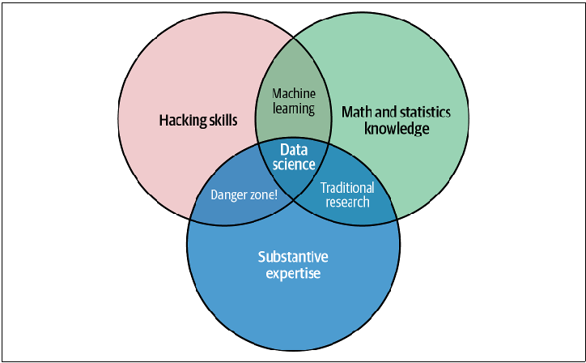

視 데이터시각화Week 01 · Outline
Data Visualization · Week 01
데이터시각화 —
강의계획
그림을 만드는 법보다 먼저, 데이터에서 관계와 예외를 찾아 판단으로 연결하는 이유를 묻습니다.
01강의 운영
학습 목표, 15주 진행 순서와 평가 방법을 확인합니다.
핵심 관계
데이터와 시각화의 관계, 그리고 이 과목이 필요한 이유를 묻습니다.
판단 변화
관계와 예외를 발견한 그림이 다음 질문과 행동을 어떻게 바꾸는지 봅니다.
視 데이터시각화Course in one sentence
01
데이터를 수집·정리·분석하고 표현하여 판단을 돕습니다.
NumPy · pandas · Matplotlib · Seaborn · scikit-learn을 하나의 분석 흐름에서 사용합니다.
수집→정리→분석→표현→이해와 전달
視 데이터시각화Implementation × Judgment
02 · CAPABILITIES
좋은 시각화는 구현과 판단이 만나는 곳에서 나옵니다.
A
구현 능력
- Python 분석 환경을 구성합니다.
- NumPy와 pandas로 데이터를 정리합니다.
- Matplotlib과 Seaborn으로 실행 가능한 그림을 남깁니다.
B
판단 능력
- 질문에 맞는 차트·축·색·주석을 선택합니다.
- 보이는 사실과 추가 가정이 필요한 해석을 구분합니다.
- AI가 만든 코드와 결과를 실행·검증·수정·설명합니다.
視 데이터시각화Weeks 01–08
03 · FIRST HALF
기초에서 기본 시각화까지
01강의소개와 환경 점검
02Python 환경과 배열 기초
03NumPy 데이터 처리
04pandas 표 데이터
05요약과 시계열 처리
06Matplotlib 기본
07다변량·subplot
08중간고사
환경 → 배열 → 표 → 시간 → 그림중간고사: Python·NumPy·pandas·Matplotlib 기초
視 데이터시각화Weeks 09–15
04 · SECOND HALF
표현 개선에서 모델 해석까지
09주석과 스타일 조정
10Seaborn 통계 시각화
11ML 결과 시각화 기초
12예측 모델 결과
13차원 축소와 군집
14종합 실습과 설계 점검
15기말고사
다듬기 → 통계 → 모델 → 차원 → 종합기말고사: 선택·해석·개선 능력 종합
視 데이터시각화Workflow & Deliverables
05 · PRACTICE
질문에서 산출물까지
직접 실행합니다.
중간 확인 과정도 Python 코드로 남기고, 제출 결과는 새 환경에서 다시 만들어져야 합니다.
01데이터 질문
02처리 코드
03표와 그림
04짧은 해석
視 데이터시각화Assessment
06 · EVALUATION
평가는 구현과 판단을 함께 확인합니다.
視 데이터시각화AI Usage
07 · RESPONSIBILITY
AI 사용은 허용됩니다.
책임은 위임되지 않습니다.
허용 범위
- 코드 초안
- 오류 설명
- 시각화 대안 탐색
- AI 사용 여부 자체는 감점 사유가 아님
학생의 책임
- 제출 코드를 직접 실행하고 결과를 확인
- 차트가 그렇게 만들어진 이유를 설명
- 조건이 바뀌면 코드를 직접 수정
- 출처·라이선스·민감정보를 확인
실행 · 검증 · 수정 · 설명은 제출한 학생의 책임입니다.
視 데이터시각화Data → Visual Encoding
視 데이터시각화Data Science

교재 그림 P-1 · 데이터과학의 세 요소
08 · POSITION
교집합은 갖춘 역량과 빠진 역량을 함께 보여줍니다.
Substantive expertise데이터의 맥락·측정 방법·현장 제약을 아는 분야 지식입니다.
Traditional research수학·통계와 분야 지식의 결합입니다. 계산 자동화는 별도 역량입니다.
Danger zone계산과 분야 지식은 있지만 통계 검증이 빠져 우연·편향을 놓칠 수 있습니다.
Data Science계산·통계·분야 지식이 모두 만나 재현성과 타당성을 함께 확보합니다.
Machine Learning = 계산 능력 + 수학·통계 · Danger zone은 코딩이 위험하다는 뜻이 아니라 통계 검증의 부재를 경고합니다.
視 데이터시각화Explore × Explain
09 · TWO ROLES
같은 데이터라도 목적이 다르면 그림도 달라집니다.
탐색
“다음에 무엇을 확인할까?”
- 분포·이상값·관계·결측 패턴을 찾습니다.
- 여러 표현을 빠르게 시험합니다.
- 완성도보다 새로운 질문이 중요합니다.
설명
“독자가 무엇을 이해해야 할까?”
- 핵심 비교와 근거만 선별합니다.
- 제목·주석·축·색을 메시지에 맞춥니다.
- 정확하고 오해 없는 전달이 중요합니다.
視 데이터시각화Why Visualization?
10 · CENTRAL QUESTION
시각화는 표에서 놓치기 쉬운 관계와 예외를 검증 가능한 질문과 다음 행동으로 바꿉니다.
중심 문제
유용한 정보 찾기
현재 해법
질문에 맞는 시각화
다음 단계
추가 증거와 행동 결정
視 데이터시각화Next Week
11 · NEXT
2주차부터 실행 가능한 분석 환경을 만듭니다.
$ python
환경
Python 경로와 버전을 확인합니다.
main.py
실행
입력부터 결과 저장까지 연결합니다.
assert
검증
작은 입력으로 계산 결과를 확인합니다.
np.array
배열
많은 숫자를 저장·선택·변형합니다.
Python 기초 문법 복습CSV 행·열 구조 확인실행 환경과 강의자료 경로 점검
視 데이터시각화Week 01 · Summary
Three ideas to keep
데이터를 보고, 판단하고, 설명하는 한 학기
구현 능력과 판단 능력을 함께 기릅니다.
AI를 사용할 수 있지만 검증 책임은 학생에게 있습니다.
시각화는 관계와 예외를 다음 질문과 행동으로 바꿉니다.